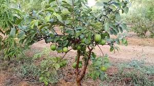

Guava Tree (Psidium guajava)
Scientific Name: Psidium guajava
Description: The guava tree is a tropical fruit-bearing tree known for its sweet, fragrant fruit. It produces small, round, green or yellow fruits with a pink or white center. Guava is rich in vitamins, particularly Vitamin C, and is often eaten fresh, juiced, or used in cooking.
Care Tips:
- Water: Needs moderate watering; do not overwater.
- Light: Requires full sunlight to produce healthy fruit.
- Temperature: Grows best in warm climates with temperatures between 25°C and 35°C.
- Soil: Prefers well-drained, sandy-loam soil.
Uses:
Guava is commonly consumed fresh or in juices, jams, and preserves. The fruit is known for its high Vitamin C content, which boosts immunity and improves skin health.